A powder room can go full black wall-to-wall without much consequence.
A full bathroom, with a shower, tile, and real humidity, is a different challenge entirely. The color choice has to survive wet zones and still feel considered rather than cave-like.
These 13 ideas are specifically built for that harder, wetter version of the room.

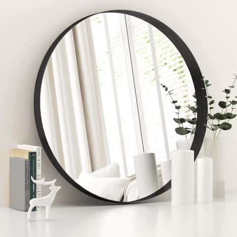
LYYYXGYP Black Round Wall Mirror for Bathroom 30x30 Inches Stainless Steel Metal Frame
Shop on Amazon1. Soften It With a Plant
A single plant against black surfaces creates a contrast that makes both the green and the black read as more vivid than either would alone.
Anything genuinely low-light-tolerant works well here, since most bathrooms don't offer ideal plant conditions to begin with.
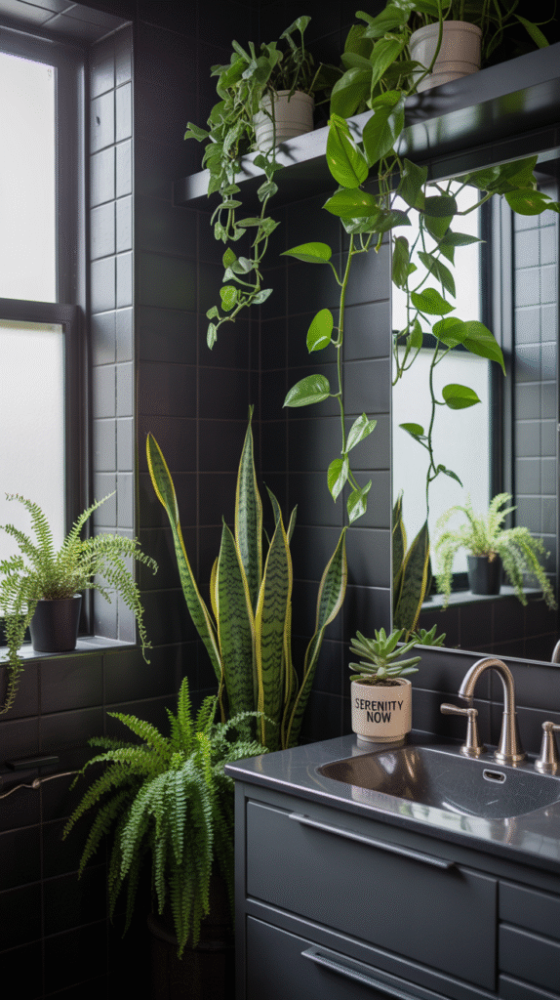
2. Frame the Shower in Black
A black-framed shower door or black shower surround brings a sleek, modern edge that a powder room never gets the chance to use, since it has no shower at all.
This single element often does more to define the room's whole look than any wall color choice.
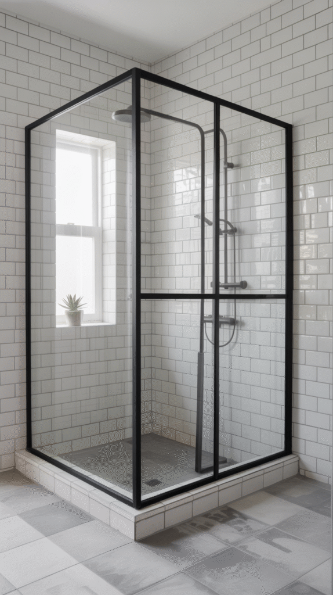
3. Add Texture Beyond the Tile
A woven rug, a textured towel, or a nubby bath mat keeps an all-black room from reading as flat or one-dimensional.
This matters more here than in most other rooms, since black has a tendency to flatten visual depth more than lighter colors do.
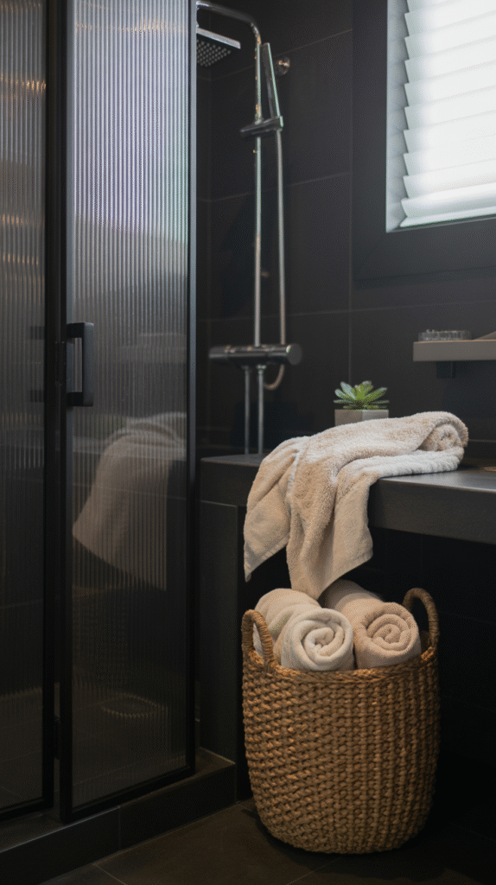
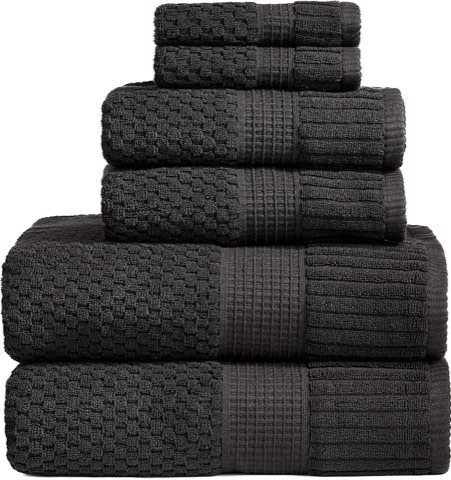
NY Loft 100% Cotton 6 Piece Textured Towel Set, Black, Super Soft Quick-Dry
Shop on Amazon4. Mix In Warm Metal
Brass or gold hardware against black surfaces creates genuine warmth that pure black-and-white can feel like it's missing.
Chrome works too, for a cooler, more modern pairing instead of a warmer one.
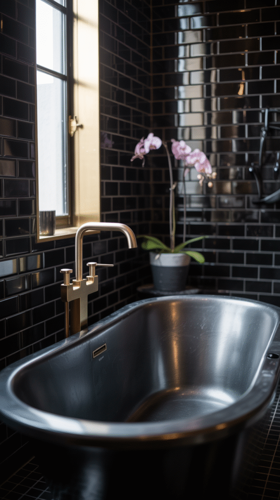

5. Test the Look With Accessories First
Black towels, a soap dispenser, or a small tray are the lowest-commitment way to test the look before painting a single wall.
This is also the easiest option to reverse later if the look doesn't end up working the way it did in planning.
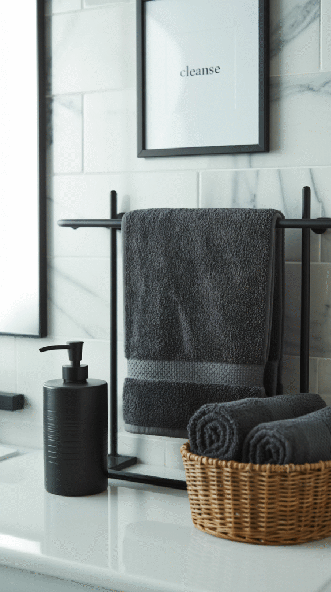
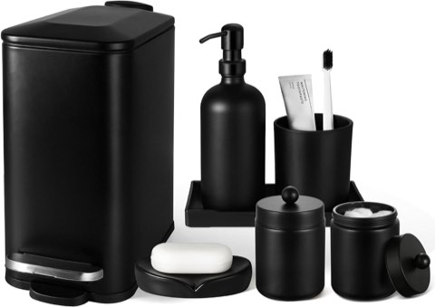
7 Pcs Matte Black Bathroom Accessory Set with Trash Can, Soap Dispenser and Tray
Shop on Amazon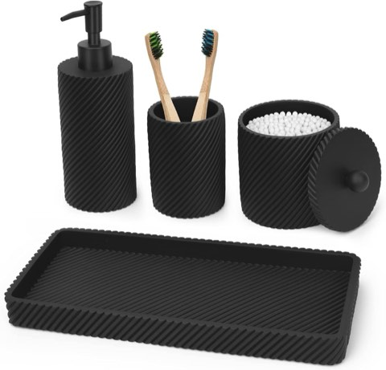
Black Bathroom Accessories Set 4 Pcs, Toothbrush Holder, Lotion Soap Dispenser
Shop on Amazon6. Let the Vanity Be the Showstopper
A black vanity, especially paired with a contrasting countertop, tends to become the room's natural focal point without any extra styling effort.
This is worth prioritizing over smaller details if only one black element is going into the room's budget.
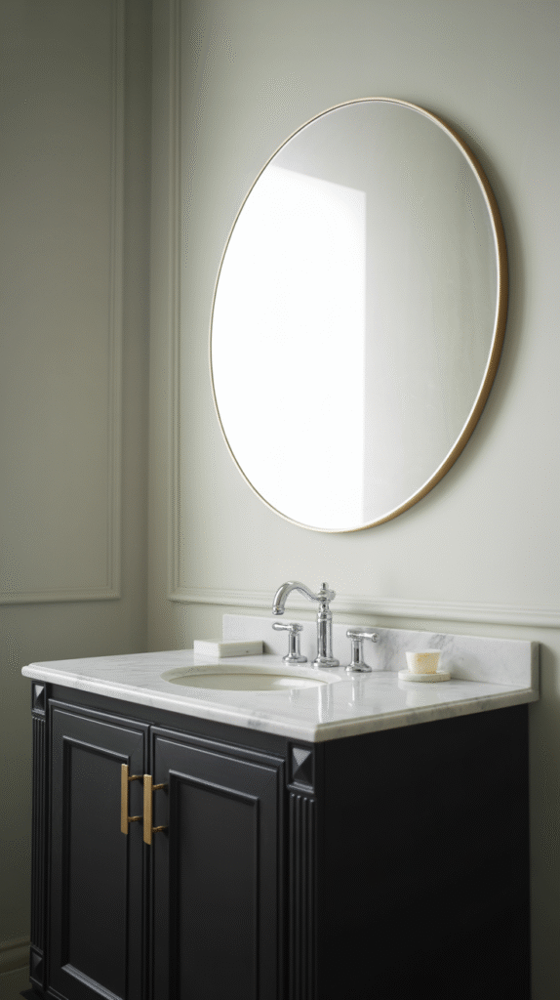
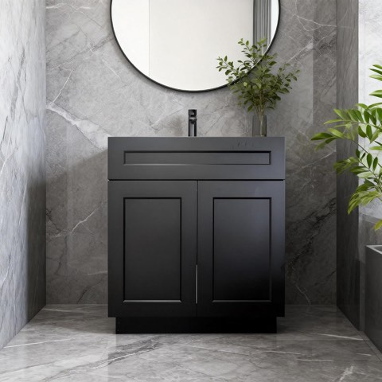
Black Shaker Bathroom Vanity Base 30", Solid Wood & Plywood Construction
Shop on Amazon7. Layer In More Light Than Usual
A black bathroom absorbs more ambient light than a pale one, which makes layered lighting, overhead, vanity, maybe even a small accent fixture, more necessary than optional.
Skipping this step is one of the most common reasons an otherwise well-designed black bathroom ends up feeling dim rather than dramatic.
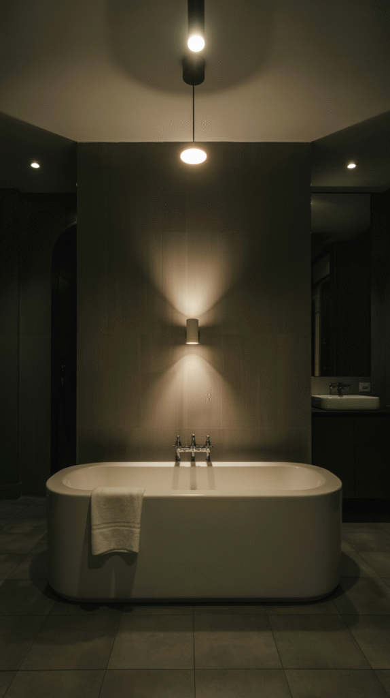
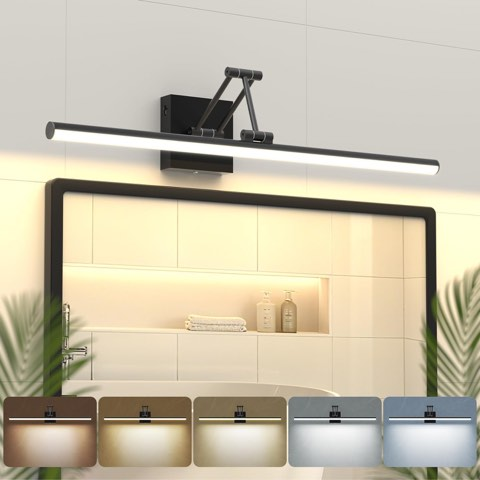
Modern Bathroom Light Fixtures, Black Vanity Lights, 360° Rotatable, 24 In
Shop on Amazon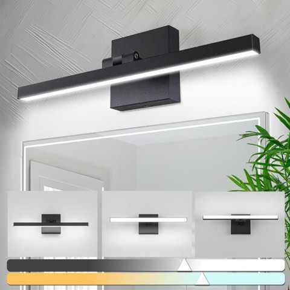
zouzai 16 Inch Black Modern LED Bathroom Vanity Light Bar, 12W, Dimmable
Shop on Amazon8. Use Tile to Add Texture, Not Just Color
Textured, patterned, or matte black tile brings visual depth that a flat painted wall can't, which matters more here than in a powder room with no wet-area tile at all.
This is where a full bathroom's black scheme genuinely diverges from a powder room's. Tile has to perform in the shower, not just look good on a dry wall.
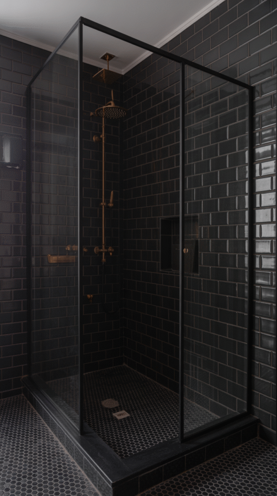
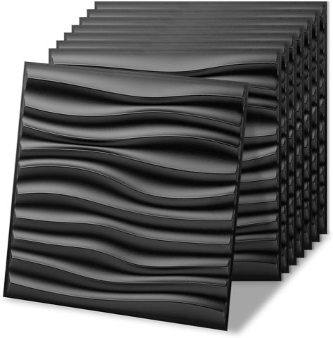
Art3d 20 Pack Decorative 3D Wall Panels, 19 Sq.Feet PVC Interior Wall Décor, 11.8"x11.8"
Shop on Amazon9. Choose Fixtures That Commit to the Look
A black faucet, black shower fixtures, or a black-framed mirror extend the theme into the room's actual hardware, not just its surfaces.
This is one of the easier ways to commit to the look without touching a single wall or tile.
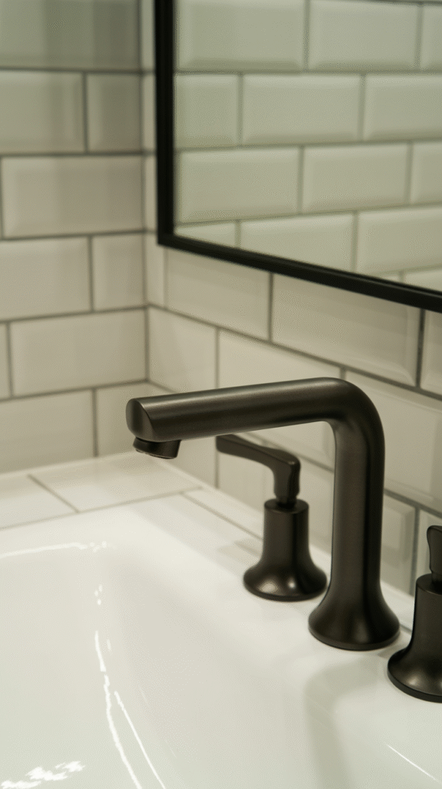
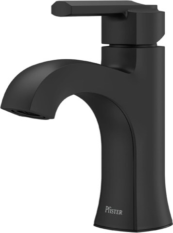
Pfister Vaneri Single Handle Bathroom Sink Faucet 1-Hole Matte Black Finish NSF Certified
Shop on Amazon10. Break Up the Black With Real Contrast
White tile, light wood, or a pale stone counter keeps an all-black scheme from tipping into something closer to a cave than a bathroom.
Even a single white towel or light-colored rug does real work here, giving the eye somewhere to land.
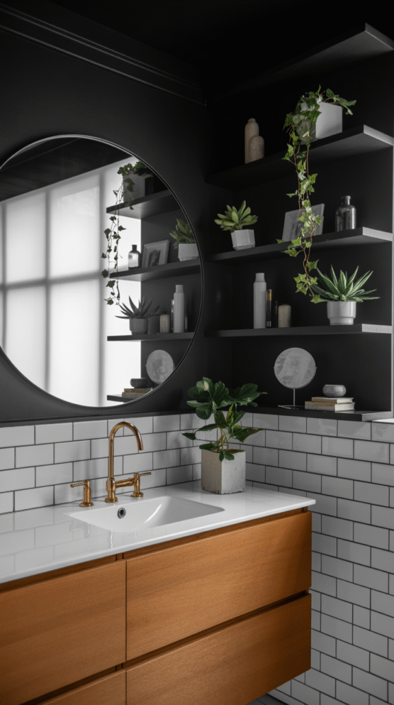

11. Pick Matte or Glossy With the Room's Light in Mind
Matte black absorbs light and leans moodier and more velvety, while glossy black bounces light around and reads sleeker, more modern.
A bathroom with limited natural light generally does better with some glossy surfaces in the mix, purely for how much more light they reflect.
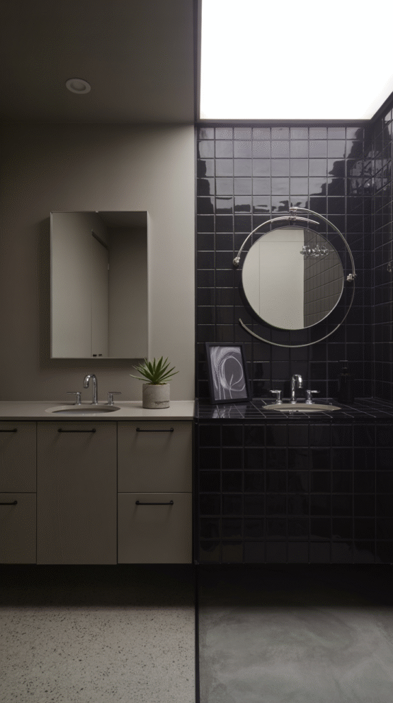
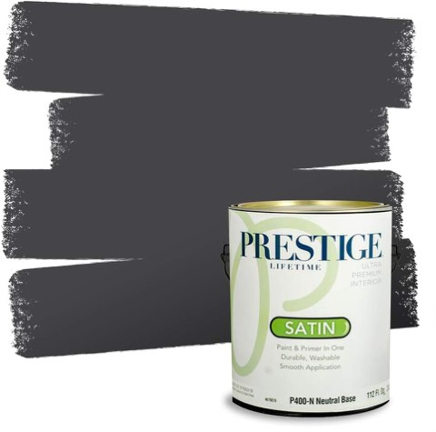
PRESTIGE Interior Paint and Primer in One, Penguin Black, Satin, 1 Gallon
Shop on Amazon12. Decide How Much Wall, Not Just Whether
Full black walls look striking in photos but can feel genuinely heavy in a smaller or darker bathroom without enough natural light.
One accent wall, or black only below a chair rail, delivers most of the drama with less risk of the room feeling closed-in.
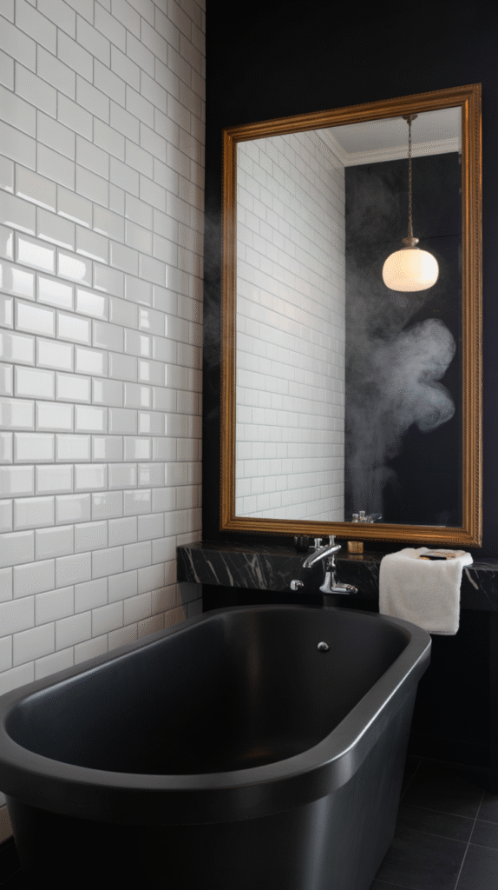

Why Black Is Having a Real Moment Right Now
Black reads as dramatic and sophisticated in a way few other bathroom colors manage, and it photographs exceptionally well against white fixtures and natural light.
It also hides water spots and small imperfections better than most pale finishes, which matters more in a room that deals with constant moisture.
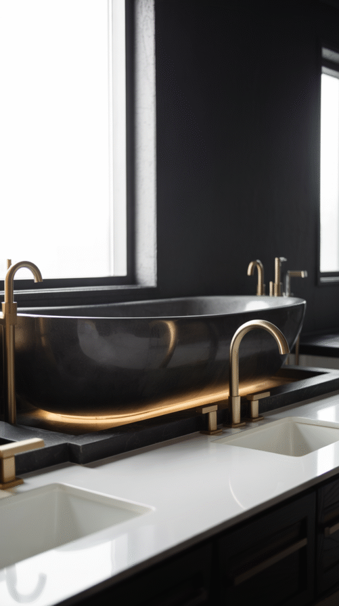
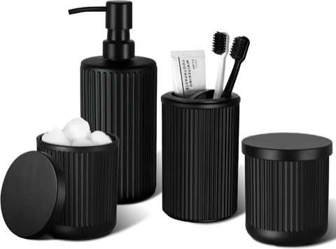
KASUNTING Matte Black Bathroom Accessories Set, 4 Pcs Glass Bathroom Accessory Set
Shop on AmazonReady to Commit to Black?
None of these 13 ideas require redoing the entire bathroom at once.
Start with accessories or a vanity swap to test the look, then move toward tile, fixtures, or a shower frame once the direction actually feels right to you.
A full bathroom genuinely gives black more room to perform than a powder room ever could. Wet-area tile, a shower frame, layered lighting, and that's exactly where this particular look does its best work.